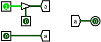

| Библиотека: | Проводка |
| Введён в: | 2.5.0 (в библиотеке Базовые, перемещён в библиотеку Проводка в 2.7.0) |
| Внешний вид: |  |
Тоннель
действует как провод в том смысле, что он соединяет точки вместе, но в отличие от провода соединение не отрисовывается явно. Это полезно, когда нужно подключить точки, расположенные далеко друг от друга в схеме, а сеть проводов сделала бы схему более уродливой. Иллюстрация ниже показывает, как это работает.

Здесь все три тоннеля имеют одинаковую метку a, поэтому три точки, к которым подключены тоннели, соединены между собой. (Если бы один из тоннелей был помечен как-то иначе, например b, то он был бы частью другой совокупности тоннелей.) Управляемый буфер наверху выдаёт плавающее значение, поскольку на его нижнем входе 0. Обычно это заставляет провод, выходящий из управляемого буфера, быть синим; но здесь он тёмно-зелёный, потому что плавающее значение на выходе совмещается через тоннель с 0 от контакта внизу. Если значение на управляющем входе буфера изменится на 1, то управляемый буфер выдаст 1 в тоннель, которая совместится с 0 от контакта внизу, и это в результате даст значение ошибки; тогда мы увидим красные провода, идущие от всех тоннелей.
Тоннель имеет только один контакт, разрядность которого соответствует атрибуту Биты данных тоннеля. Этот контакт не является ни входом ни выходом - соответствующие тоннели просто прозрачно соединены.
Когда компонент выбран, или уже добавлен, комбинации от Alt-0 до Alt-9 меняют его атрибут Биты данных
, а клавиши со стрелками меняют его атрибут Направление
.
Нет.
Позволяет редактировать привязанную к тоннелю метку.